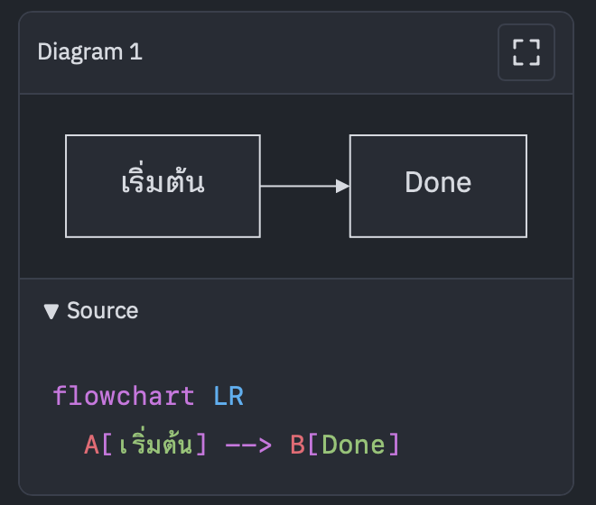

The MarkItBetter field guide.
Workflows, snippets and diagrams, built around your keyboard.
Explore the guideMermaid development preview. Not in v0.49.0.

Read. Edit. Keep your place.
Preview is the resting state. Enter the source when you need it.
| Action | Key |
|---|---|
| Edit from preview | i |
| Save and return to preview | Esc |
| Open a file by name | ⌘ P / Ctrl P |
| Move to the next snippet field | Tab |
Diagrams belong in the document.
Keep the Mermaid source, inspect the result, and open the whole frame for a closer look.
Completed development feature. Not included in the public v0.49.0 release.
Mermaid source
flowchart TB
A[Write Markdown] --> B[Preview]
B --> C[Read the source]
C --> D[Inspect the diagram]Interactive guide example. Drag to pan; use Fit All to reset.
- Source, always yoursExact, highlighted Mermaid below the visible diagram.
- Room to inspectMaximize the frame; Escape returns to your place.
- Readable labelsInternational text and documented family support.
Slash snippets, with Tab fields.
Type / to insert a block, then fill its fields with Tab.
Choose Link. Enter the label, press Tab, then enter the URL.
[API reference](https://example.com)Choose Table. Tab moves through cells and adds another row at the end.
| Item | Status |
| --- | --- |
| User guide | Draft || Item | Status |
|---|---|
| User guide | Draft |
Choose Code block. Enter a language, then Tab into the code.
```ts
const message = "Hello, Markdown";
console.log(message);
```const message = "Hello, Markdown";
console.log(message);Reading samples in IBM Plex.
On these pages, reading text uses IBM Plex. Thai keeps its visible loops; code has a dedicated mono face.
| Language | Reading sample |
|---|---|
| English | Keep the source. Understand the result. |
| ภาษาไทย | เก็บต้นฉบับไว้ แล้วอ่านแผนภาพให้เข้าใจ |
| 日本語 | ソースを残して、図を読み解く。 |
Proposed contents
The chapter plan for review. Open a row to see its scope.
Install and get oriented
Installation, first launch and platform notes
The $13 price and free-upgrades-for-life policy
The MIB workflow
Preview first; i to edit; Escape to read
Autosave, untitled files and precise preview-to-source navigation
Files and working folders
Open, save, tabs, recent files and Favorites
Quick-open and local Markdown links
Edit with precision
Multi-cursor, rectangular selection and line operations
Focus mode, formatting and undo
Slash menu and snippet fields
Insert links, images, code, tables and collapsible blocks
Tab and Shift+Tab through fields; Escape finishes
Tables that stay in Markdown
Caret-anchored row and column commands
Tab to add a row; format to align the source
The supported Markdown dialect
Tasks, footnotes, highlights, code and collapsible content
Working examples and safe HTML limitations
Image and link snippets; local references
Paths, alt text and troubleshooting missing assets
Diagram workflows with Mermaid (Development preview)
Write a fenced Mermaid block and see the diagram
Titles, accessible names and untitled fallbacks
Keep highlighted Source below the visible diagram
Maximize, restore, Escape, focus and reading position
Find in labels and source; return to the editor
Mermaid11.17.2 families, aliases and approved compatibility limits
Thai, Japanese, mixed scripts and long labels
Local errors, diagram bounds, recovery and troubleshooting
Flowchart, sequence, architecture and project-note recipes
Preview and source, connected
Reading width, panels, task checkboxes and source navigation
Move between reading and editing without losing your place
Make the reading space yours
Preview font presets, light/dark appearance and editor fonts
Thai looped body text, Japanese and custom preview styles
Recipes for real work
A README, technical notes and a release checklist
A diagram-assisted architecture note, marked by availability
Keyboard reference
Mode switching, navigation, editing, tables and snippet fields
macOS keys and documented Windows/Linux equivalents
Troubleshooting and what is next
Saving, fonts, local assets and rendering problems
Released versus completed development features; updates and help